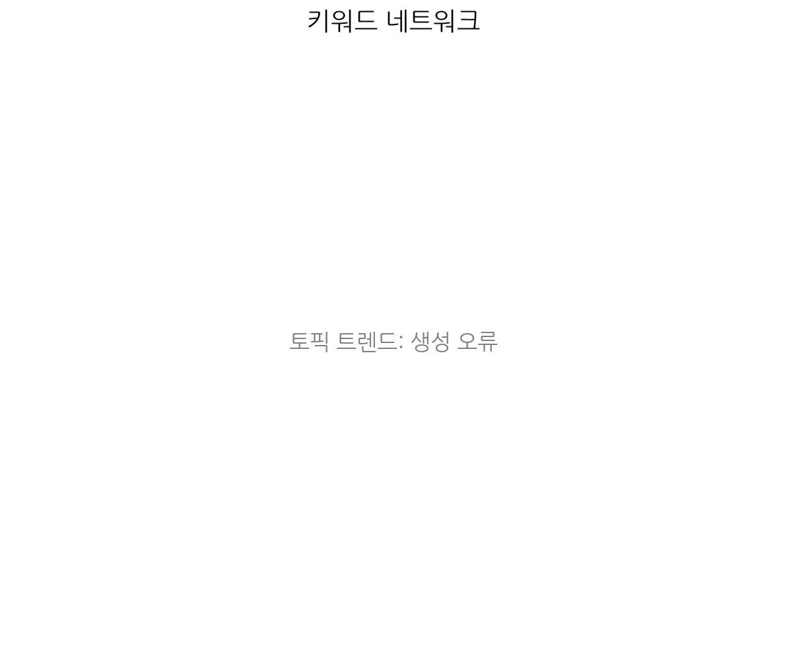
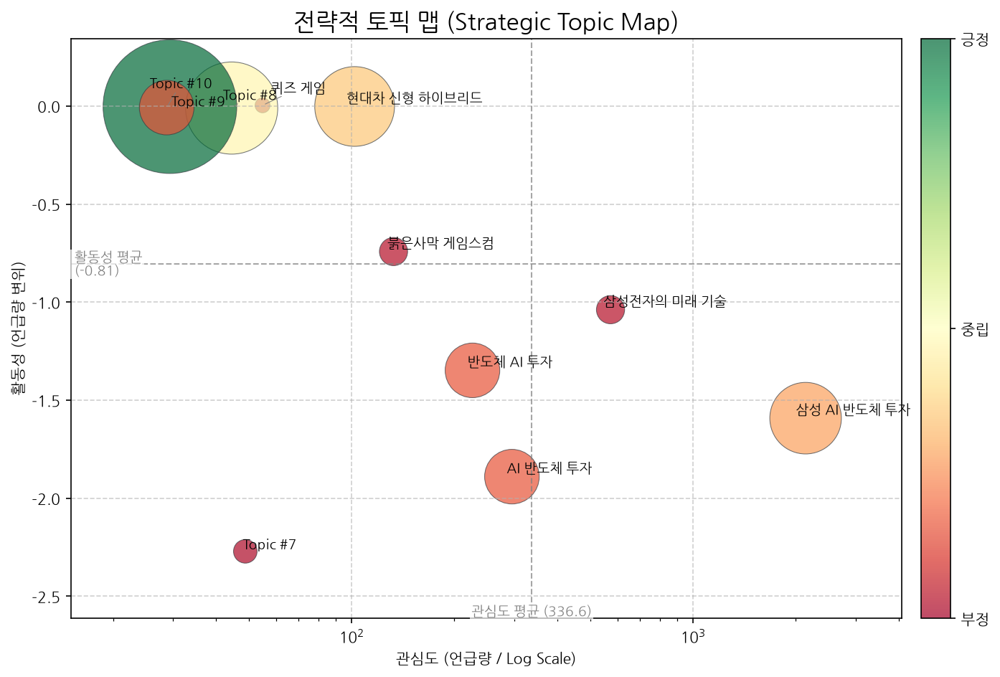
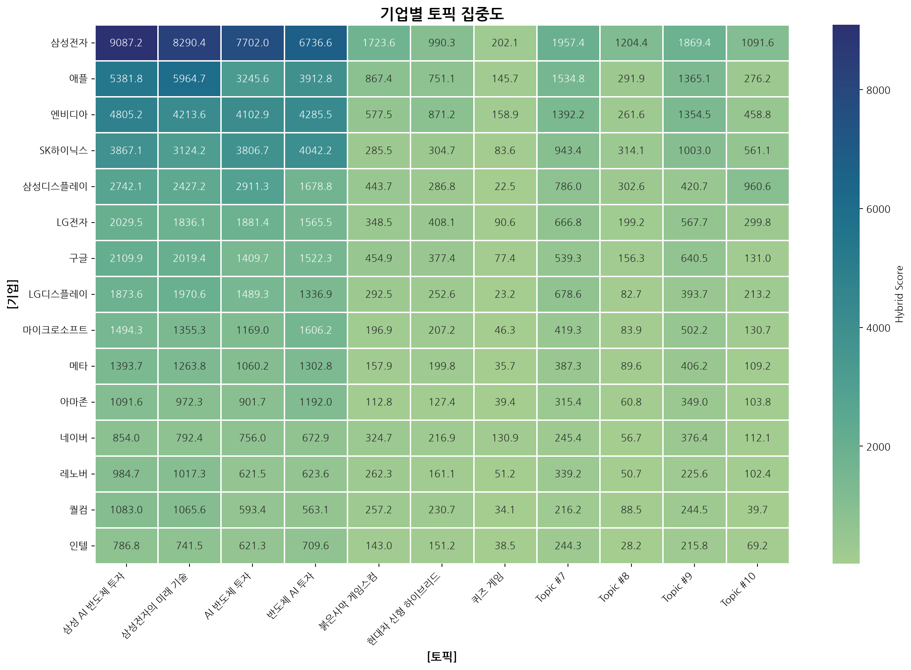
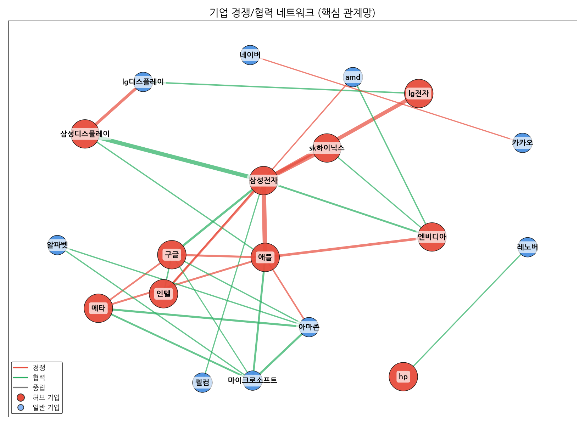
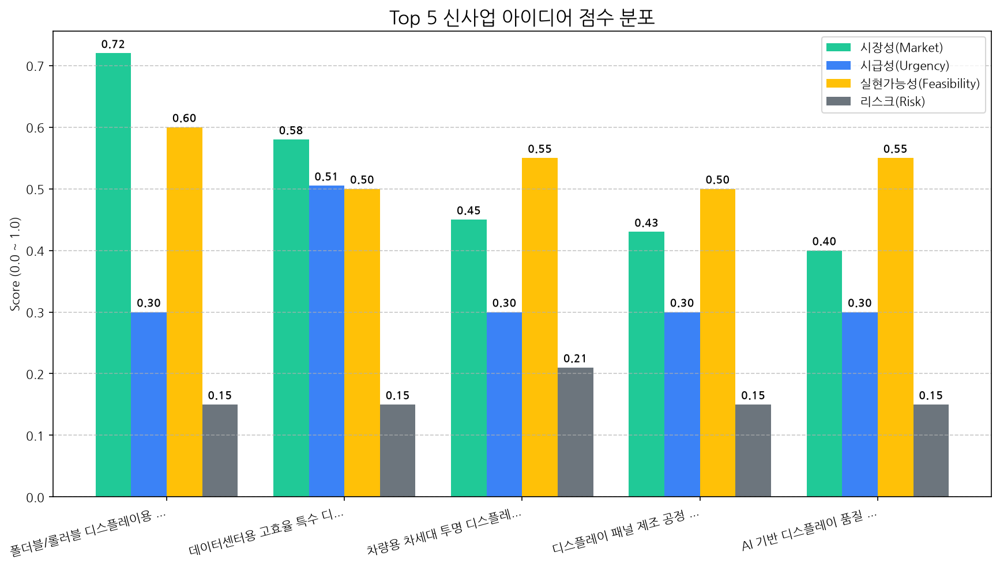

AI 분석 실패 (API 요청 한도 초과)
AI 분석 실패 (API 요청 한도 초과)

| 토픽 | 요약 | 핵심 키워드 |
|---|---|---|
| 삼성 AI 반도체 투자 | 삼성전자가 AI 시대를 맞아 반도체, 디스플레이, 스마트폰 등 핵심 기술 분야에 대한 투자를 강화하고 있습니다. | ai, 반도체, 갤럭시 |
| 삼성전자의 미래 기술 | 삼성전자가 AI, OLED, 폴더블 등 차세대 디스플레이 및 반도체 기술을 활용하여 갤럭시 스마트폰, TV 등 신규 제품 출시와 가격 경쟁력을 확보하는 전략을 2분기와 하반기 시장에 집중하고 있음을 보여줍니다. | ai, oled, 디스플레이 |
| AI 반도체 투자 | 삼성전자 등 국내 첨단 산업 기업들이 AI 반도체, 로봇, 디스플레이 등 차세대 기술 분야에 대규모 투자를 통해 미래 성장 동력을 확보하고 대한민국 경제를 이끌어갈 전략을 다루는 내용입니다. | ai, 반도체, 투자 |
| 반도체 AI 투자 | 미국 AI 사업 투자와 한국 반도체 기업(SK하이닉스, 삼성전자) 주식, 코스닥/코스피 상장, 메모리, 소재, ADR, 외국인 지분 동향 등을 중심으로 분석합니다. | 반도체, 미국, 투자 |
| 붉은사막 게임스컴 | 펄어비스가 독일 게임스컴 2026에서 신작 '붉은사막'을 전시하고 e스포츠, 모바일 등 다양한 게이밍 경험을 선보일 예정입니다. 삼성 브랜드와 협력하여 6k 모니터 등도 주목받을 것으로 예상됩니다. | 게임, 게임스컴, 게이밍 |
| 현대차 신형 하이브리드 | 현대자동차의 신형 하이브리드 차량, 특히 플레오스 모델에 대한 내용으로, 소프트웨어 중심 자동차(SDV) 기술이 적용된 인포테인먼트 시스템과 실내 기능, 하이브리드 및 전기차 옵션 등을 다룹니다. | 차량, 주행, 플레오스 |
| 퀴즈 게임 | 힌트와 초성을 바탕으로 문제를 풀어 정답을 맞추는 퀴즈 게임에 대한 내용입니다. 휴대용 무선 블루투스 기기 할인 정보와 관련된 문제도 포함될 수 있습니다. | 문제는, 정답은, 이다 |
| Topic #7 | (LLM 해석 실패) | 특허, oled, lg화학의 |
| Topic #8 | (LLM 해석 실패) | 대출, 사내, 85m2 |
| Topic #9 | (LLM 해석 실패) | 나는, 내가, 것이 |
| Topic #10 | (LLM 해석 실패) | 천안, 분양, 푸르지오 |

해당 토픽: 삼성 AI 반도체 투자, AI 반도체 투자
권고 전략: AI 반도체 시장 성장에 따른 고성능, 저전력 디스플레이 기술 R&D 강화 및 관련 기업과의 파트너십 모색을 통해 기술 리더십을 확보해야 합니다.
해당 토픽: 삼성전자의 미래 기술
권고 전략: OLED, 폴더블 등 차세대 디스플레이 기술을 활용한 신규 제품 라인업 강화 및 경쟁력 있는 가격 전략 수립으로 시장 점유율을 확대해야 합니다.
해당 토픽: 현대차 신형 하이브리드, 퀴즈 게임
권고 전략: AI 및 SDV 기술과의 연계성을 고려하여 자동차 인포테인먼트용 디스플레이 솔루션 개발에 대한 잠재적 기회를 탐색해야 합니다.
해당 토픽: 붉은사막 게임스컴, Topic #7, Topic #8, Topic #9
권고 전략: 관련성이 낮은 토픽에 대해서는 단기적인 전략 수립보다는 장기적인 시장 동향 관점에서 잠재적 영향을 지속적으로 모니터링해야 합니다.
AI 분석 실패 (API 요청 한도 초과)


| 관계 | 유형 | 강도(언급빈도) | 주요 연관 근거 |
|---|---|---|---|
| sk하이닉스 ↔ 삼성전자 | rivalry | 1773 | 외국인 ‘셀 코리아’에 무너진 원화…환율 1500원 돌파 애플 '메모리 식민지' 덫으로?···中 수입론, 9기가 D램이 나오기까지 [엄태윤의 마켓인텔리전스] SK하이닉스의 나스닥 상장과 미래전략 |
| 삼성전자 ↔ 애플 | rivalry | 449 | ‘ 폴더블 아이폰’ 오기 전에 승부수…삼성 ‘비장의 라인업’ 꺼냈다 삼성, ‘갤S26’ 앞세워 스마트폰 1위 수성…“칩플레이션 지속, 삼성·... 삼성, 애플 첫 폴더블 폰 맞서 라인업 재편…'와이드형' 카드 꺼냈다 |
| 삼성디스플레이 ↔ 삼성전자 | partnership | 388 | 이재용 회장, 이 대통령과 만찬 회동...반도체 지방투자 막판 조율 삼성 12개 계열사, 협력사들과 상생협약 체결 테슬라 생태계 핵심 파트너로 부상한 LG에너지솔루션·삼성전기 |
| 구글 ↔ 삼성전자 | partnership | 203 | 자체 AI칩 개발 뛰어든 앤스로픽, 파운드리 파트너로 삼성 낙점 [기업용 에이전틱 AI 큰 장] ①구글, 삼성 DX 전세계 임직원에 ‘제미나... [반도체 전쟁] 인텔 18A '웨이퍼 변동성' 극복… 요동치는 파운드리 판도... |
| 구글 ↔ 엔비디아 | neutral | 85 | 美 반도체주 '급락' 속...미국증시 3대 지수 '하락' 엔비디아 1.6%, 필라델피아반도체지수 5.3%, 마이크론 6.7%↓...엔비디아... 프로젝트 글래스윙? 네모트론 연합? 생존 위한 AI 동맹 확산 |
AI 분석 실패 또는 특이사항 없음.
AI 분석 실패 (API 요청 한도 초과)
(감지된 주요 리스크 시그널 없음)
대상: AI 분석 중...
전략: AI 분석 중...
대상: AI 분석 중...
전략: AI 분석 중...
대상: AI 분석 중...
전략: AI 분석 중...
대상: AI 분석 중...
전략: AI 분석 중...
AI 분석 실패 (API 요청 한도 초과)
AI 분석 실패 (API 요청 한도 초과)
| idea | value_prop | score | target_customer |
|---|---|---|---|
| 폴더블/롤러블 디스플레이용 특수 코팅 및 보호 필름 | 당사의 박막 코팅 기술과 정밀 공정 역량을 활용하여, 100만 회 이상의 반복 접힘에도 주름 및 손상이 거의 없는 혁신적인 보호 필름을 개발합니다. 이는 디스플레이 수명 연장 및 제품 신뢰성 향상에 기여합니다. | 4.7 | 폴더블/롤러블 디스플레이 패널 제조사 (소재 개발팀, 설계팀) |
| 데이터센터용 고효율 특수 디스플레이 모듈 | 당사의 대면적 공정 기술과 에너지 효율적인 디스플레이 설계 역량을 바탕으로, 서버 상태, 네트워크 트래픽, 온도 등을 실시간으로 직관적으로 파악할 수 있는 고밀도 특수 디스플레이 모듈을 제공합니다. 이는 운영 효율성을 20% 이상 향상시킵니다. | 4.5 | 데이터센터 운영 기업 (IT 인프라 관리팀, 시설 관리팀) |
| 차량용 차세대 투명 디스플레이 패널 | 기존 유리창을 활용한 정보 표시로 실내 공간 극대화 및 몰입감 있는 사용자 경험 제공. 당사의 대면적 공정 기술과 B2B 공급망을 활용하여 안정적인 대량 생산 및 맞춤형 솔루션 제공. | 3.4 | 글로벌 완성차 OEM (차량 인포테인먼트 시스템 개발팀) |
| 디스플레이 패널 제조 공정 데이터 분석 및 최적화 서비스 (SaaS) | 당사의 디스플레이 제조 공정에 대한 깊이 있는 이해와 데이터 분석 전문성을 결합하여, 설비 가동률 15% 향상, 수율 5% 개선, 불량률 10% 감소를 달성하는 SaaS 기반의 분석 및 최적화 서비스를 제공합니다. 이는 제조 경쟁력 강화에 직접적으로 기여합니다. | 3.4 | 디스플레이 패널 제조 기업 (생산 관리팀, 공정 엔지니어링팀) |
| AI 기반 디스플레이 품질 검사 자동화 솔루션 | 당사의 디스플레이 제조 경험과 AI 기술을 결합하여, 기존 대비 30% 이상 향상된 검사 속도와 99% 이상의 결함 검출 정확도를 제공합니다. 이를 통해 생산 비용 절감 및 품질 일관성 확보에 기여합니다. | 3.4 | 디스플레이 패널 제조사 (품질 관리팀, 생산 기술팀) |

| Hypothesis | Target | KPI | Owner | Due |
|---|---|---|---|---|
| 폴더블/롤러블 디스플레이 패널 제조사들은 현재 시장에 출시된 솔루션보다 100만 회 이상의 반복 접힘에도 주름 및 손상이 거의 없는 당사의 보호 필름 기술에 대해 높은 관심을 보이고, 개발 협력 또는 초기 구매 의사를 가질 것이다. | 주요 폴더블/롤러블 디스플레이 패널 제조사 3곳(예: 삼성디스플레이, LG디스플레이)의 소재 개발팀 또는 사업 개발팀 책임자와 1차 기술 미팅 진행. | 미팅 대상 3곳 중 최소 2곳 이상에서 당사의 기술 로드맵 및 샘플 개발 계획에 대한 긍정적 피드백 및 추가 논의 의사 확보. | 사업개발팀 | 2026-08-10 |
| 유연성과 내구성이 뛰어난 특수 폴리머 기반 코팅 소재의 초기 샘플 개발이 성공적으로 이루어지면, 이는 폴더블/롤러블 디스플레이 패널 제조사의 요구사항을 충족시키고 기술 검증 단계를 통과할 가능성이 높다. | 경쟁사 대비 우수한 내구성과 유연성을 갖춘 특수 폴리머 코팅 소재 후보군 2~3종 도출 및 초기 실험실 수준 샘플 제작. | 개발된 샘플이 100만 회 굽힘 테스트에 대한 초기 내구성 지표 (예: 90% 이상 성능 유지)를 충족하고, 패널 제조사가 요구하는 특정 물성 (예: 굴곡각, 투과율)을 만족하는지 여부 확인. | 기술기획팀, 연구개발팀 | 2026-08-10 |
| 경쟁사의 현재 솔루션과 당사의 차별화된 기술 (예: 100만 회 굽힘 내구성, 뛰어난 주름 방지 효과)에 대한 명확한 분석을 통해, 시장에서의 경쟁 우위를 확보하고 잠재 고객에게 매력적인 가치를 제안할 수 있을 것이다. | 주요 경쟁사 2~3곳의 폴더블/롤러블 디스플레이 보호 필름 솔루션 (기술 사양, 성능, 가격, 고객 피드백 등)에 대한 심층적인 시장 조사 및 분석 보고서 작성. | 경쟁사 대비 당사의 기술적 우위점을 명확히 정의하고, 이를 기반으로 한 차별화된 마케팅 메시지 초안 개발. | 사업개발팀, 마케팅팀 | 2026-08-10 |